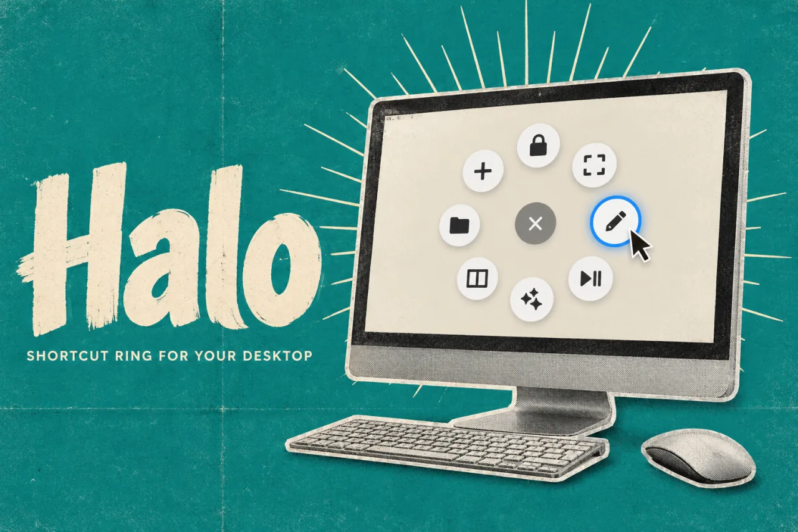
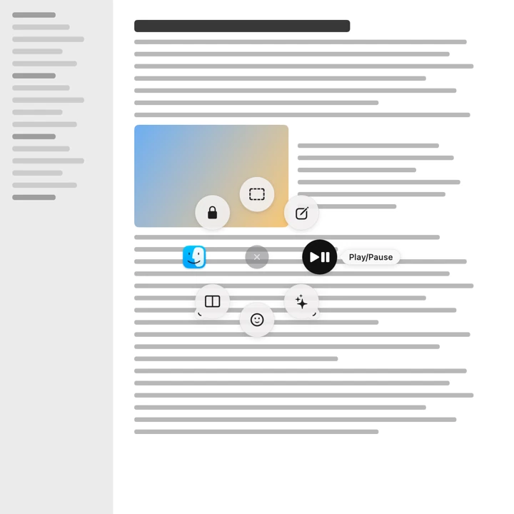

HaloProduct story · 5 min read
Keep the action close to the pointer.
A desktop action ring for frequently used shortcuts, with app-specific layouts and a visual editor.
Read the case study

Original Halo editor capture from the project documentation. The action’s position and settings are visible together.
View full size ↗01 The problem
How much can a shortcut tool offer without making its first choice slower?
A useful shortcut is one I can reach without breaking the task I am doing. Halo puts a ring of actions around the pointer, instead of asking me to hunt through menus or remember another keyboard combination. The design problem was keeping that first choice quick while still allowing the ring to grow.
Designed for Desktop user with a few repeated actions. Reach a familiar action without a long interruption.
User context Design assumption
Switching between a document, apps and small utility tasks.
- The friction
- Too many shortcuts and contexts become another thing to remember.
- Design implication
- Keep the first ring small, stable and easy to edit.
Example situation · illustrative scenario. Imagine selecting text, opening an app and returning to the same document several times. A small set of nearby actions could keep that sequence from becoming a tour of menus.
02 The direction
What shaped the design
A small first ring needs a clear way to grow. Stable directions, app-specific contexts and folders serve different levels of familiarity.
Original project and interface captures · reviewed October 2026
My direction. I kept the first ring focused and made the editor use the same positions that appear around the pointer.
Process and product scope
I organised the experience around opening the ring, choosing a direction and returning to the original task. Clicking supports a deliberate choice; holding the shortcut, moving towards an action and releasing supports a quicker gesture once the layout is familiar.
The editor exposes the same ring spatially. Selecting a slot opens its action, app behaviour, label and appearance settings. App-specific rings and folders hold more choices without putting every action into the first ring.
Halo is an independent project inspired by Logitech’s Actions Ring. I focused on the interaction and visual configuration. Comparing click and flick selection with familiar keyboard shortcuts is still a useful next test.
- 8
- slots in a ring
- Per app
- different action sets
- Click or flick
- two ways to choose
- Open
Invoke the ring near the current pointer.
- Choose
Click a labelled action or use the hold-and-flick gesture.
- Configure
Select the same slot in the editor and adjust its action.
03 Design decisions
The choices behind Halo
Open a decision to see the reasoning and trade-off.
01Make the first choice spatial
Keep actions in stable positions around the pointer, with labels available while choosing.
Why this matters. A direction can become familiar through use, while labels help someone who is still learning the layout.
The trade-off. Moving actions frequently would work against that familiarity. Customisation needs to feel deliberate.
02Let the editor mirror the ring
Select a slot in the ring and edit that action beside it.
Why this matters. The person can see which position they are changing instead of translating between a list and the final layout.
The trade-off. A visual editor still needs clear names and keyboard access; position alone is not enough.
03Keep specialised actions out of the first layer
Use app-specific rings and folders for actions that belong to a particular context.
Why this matters. A general ring can stay small while a specialist workflow has its own useful choices.
The trade-off. Context changes and nested folders must remain predictable. More actions do not automatically make the tool faster.
04 The outcome
A ring that stays connected to its editor.
I gave the ring and its editor the same spatial model, with click and hold-and-flick selection, per-app configurations and nested action folders. The app supports actions such as app control, media, window management and snippets. Some actions depend on the operating system and the permissions available.

More about the experience
- Visual editor. The selected slot and its settings share one view.
- Platform scope. Some actions depend on OS capabilities or granted permissions.
05 Reflection
A shortcut is useful when returning to the task feels easy.
I would start a comparison with a small, familiar task set rather than a ring full of possibilities. I want to know which positions people remember, when they hesitate and whether app-specific rings help or surprise them.
What I would evaluate next proposed work
- configure three frequently used actions, repeat the task after a break and compare hesitation with an existing shortcut method.
- keyboard-only configuration, ring changes between apps, folder backtracking and permission-denied actions.
Review the file. Keep a way back.